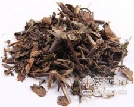

醉鱼草

拼音
Zuì Yú Cǎo
别名
闹鱼草、鱼尾草、痒见消、铁线尾
来源
马钱科醉鱼草属植物醉鱼草Buddleia lindleyana Fort.，以带根的全草及叶、花入药。根及全草全年可采，洗净晒干；花、叶夏秋花盛开时采集，晒干。
生境分布
生于山地，亦有栽培以供观赏。分布浙江、安徽、江苏、江西、福建、广东、广西、湖南、湖北、四川等地。
药材特点
落叶灌木，高1～2.5米。树皮茶褐色。小枝具四棱而稍有翅，棱的两面有短白茸毛，老则脱落。叶对生，卵圆形至矩状披针形，长3～8厘米，宽1.5～3厘米，纸质，先端尖，全缘或有小齿，基部浑圆至钝形或楔形；幼嫩时叶面间有茸毛，下面密被绵毛，老时两面均无毛；叶柄长2～4毫米。总状花序顶生，长18～40厘米；总苞1片，披针形，有茸毛；萼钟状，4或5浅裂：花冠紫色，有白色闪光的细鳞片，长1～1.2厘米，前端膨大，4裂，裂片卵圆形；雄蕊4，花丝短，贴生；雌蕊1，花柱线形，柱头2裂，子房上位。蒴果，2瓣裂，椭圆形，长约5毫米。种子细小，略为纺锤状。花期4～7月。果期10～11月。 本植物的根（七里香）、花（醉鱼草花）亦供药用，各详专条。
性状
无性状数据
性味
微辛、苦，温。有毒。
功能主治
祛风除湿，止咳化痰，散瘀，杀虫。支气管炎，咳嗽，哮喘，风湿性关节炎，跌打损伤；外用治创伤出血，烧烫伤，并作杀蛆灭孑孓用。
用法用量
3～5钱。外用适量，捣烂或研粉敷患处。
化学成分
叶含醉鱼草甙等多种黄酮类。
药理作用
1：醉鱼草有某些杀昆虫作用
摘录
《全国中草药汇编》